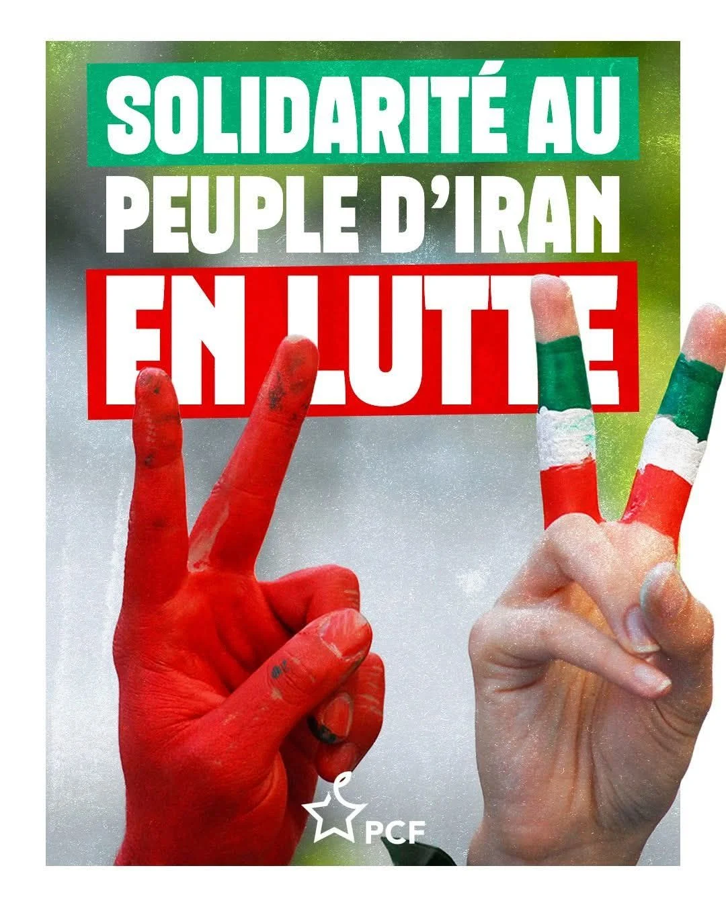

Appel fédéral
À Niort, notre appel à se rassembler en solidarité avec le peuple iranien
Date indiquée par Facebook · 16 janvier 2026
Repères éditoriaux
Nous avions donné rendez-vous le samedi 17 janvier 2026 à midi, place du Marché à Niort, avec des prises de parole libres. Nous soutenions les Iraniennes et les Iraniens qui se battent pour leurs droits, dans le sillage de « Femme, Vie, Liberté ». Nous défendions leur droit à décider de leur avenir et appelions à agir par la voie diplomatique contre l’escalade militaire.
Texte conservé avec la publication
A Niort, ce samedi 17 janvier 2026, rassemblons-nous à 12 heures, place du Marché, en soutien au peuple iranien, avec libre prise de paroles.
La Fédération des Deux-Sèvres du PCF exprime a solidarité la plus totale avec le peuple iranien qui se soulève contre la misère et l’oppression, soulèvement qui est le fruit de longues années de luttes dont celles courageusement menées par les iraniennes pour défendre leurs droits dans le mouvement « Femme, Vie, Liberté ».
Depuis plusieurs jours, les iraniennes et les iraniens subissent une répression féroce et des massacres massifs de la part du régime des Mollahs en place à Téhéran. Cette dictature d’une autre époque, qui nie les droits de son peuple, doit laisser place à un processus démocratique, respectueux de ses droits et de sa souveraineté, et ne doit pas être confisqué et détourné soit par la répression des Mollahs, soit par l’ingérence et le recyclage d’une autre régime autoritaire, celui du Shah, dont l’héritier est promu par des puissances étrangères.
C’est au peuple iranien et à lui seul de décider de son avenir.
Pour faire entendre cette voie, nous exigeons que les autorités françaises, l’Union européenne et toute la communauté internationale agissent en ce sens, expriment la solidarité avec celles et ceux qui, au péril de leur vie, se battent pour leur avenir et leur liberté.
Tout doit être mis en œuvre pour empêcher, par tous les moyens diplomatiques possibles, l’escalade militaire que Donald Trump et les États Unis préparent en Iran, qui déstabiliserait davantage encore cette région du monde et entraînerait le Moyen Orient dans le chaos.
C'est pourquoi, nous invitons toutes les forces progressistes du département des Deux-Sèvres à exprimer leur soutien au peuple iranien dans sa lutte pour la démocratie.

Sources
Archive rouge · export Facebook · AR-0002-FB-00902
À lire aussi · Liberté et démocratie pour le peuple iranien